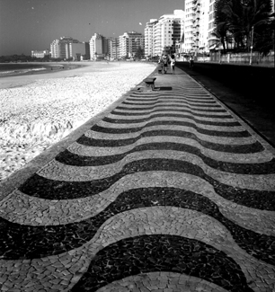
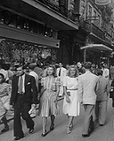
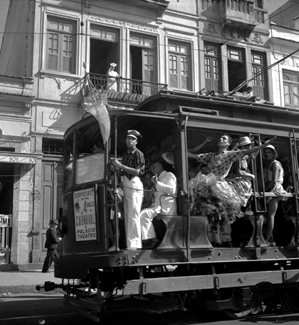
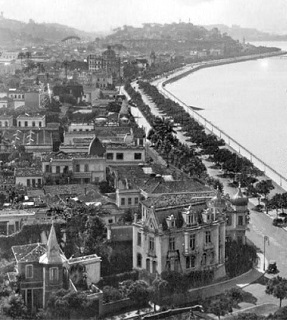
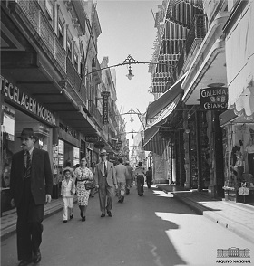

Imagens do Rio Antigo

Flamengo
Bairro conhecido por seu amplo parque de mesmo nome, com locais para piquenique, concertos ao ar livre e pistas de corrida.

Aterro
Complexo de lazer da cidade do Rio de Janeiro construído sobre aterros sucessivos na baía de Guanabara e inaugurado em 1965.

Copacabana
Famosa pela praia em forma de meia-lua e um dos bairros mais animados do Rio. Tem o apelido de Princesinha do Mar.

Praia de Copacabana
Uma das praias mais emblemáticas do Brasil! Tornou-se famosa e hoje é um dos maiores pontos de interesse no Rio de Janeiro.

Vista Chinesa
A Vista Chinesa é um mirante em estilo chinês localizado no bairro do Alto da Boa Vista. Está localizado dentro da Floresta da Tijuca.

Central
Estação de trens metropolitanos localizada no centro da cidade. Até o ano de 1998 se chamava Estação Dom Pedro II.

Palácio Monroe
Antigo Senado Federal entre 1925 e 1960 e localizado no centro do Rio de Janeiro. Foi considerado pequeno para a função.

Cinelândia
Nome popular da região do entorno da Praça Floriano, no centro da cidade do Rio de Janeiro e conhecida pela concentração de cinemas.

Municipal
O Theatro Municipal do Rio de Janeiro é um dos mais importantes teatros brasileiros. Localizado na Cinelândia.

Rua do Ouvidor
Originou-se de um caminho que dava acesso aos armazéns ou trapiches, como eram conhecidos à época, do antigo porto do Rio.

Carnaval
Festival do cristianismo ocidental que ocorre antes da estação litúrgica da Quaresma. Ocorrem tipicamente entre fevereiro e março.

Carnaval
É feito de desfiles e fantasias, sendo um produto da sociedade vitoriana do século XX e, teve Paris como modelo exportador da festa.

Avenida Beira Mar
Localizada na orla do centro do Rio de Janeiro, foi idealizada quando Pereira Passos era prefeito do Rio e Rodrigues Alves presidia o Brasil.

Rua Gonçalves Dias
Localizada no centro da cidades, seu nome homenageia o poeta brasileiro de mesmo nome. Inicialmente, era chamada de Rua do Latoeiros.